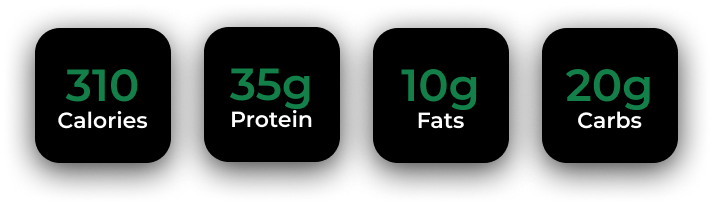

This lightened-up version of classic chicken parmesan is packed with protein, low in carbs, and bursting with flavour. The breaded chicken cutlets are pan-fried to a golden crisp, topped with a tangy tomato sauce, and melted mozzarella cheese. It's a delicious and satisfying meal that won't leave you feeling guilty.
Ingredients
200g boneless, skinless chicken breasts
1/2 cup all-purpose flour
2 large eggs, beaten
1 cup breadcrumbs (panko or plain)
1/4 cup grated Parmesan cheese
1 tablespoon olive oil
Salt and pepper to taste
1/2 cup marinara sauce
1/2 cup shredded mozzarella cheese
Macros

Tips
Prioritize Whole Foods: Focus on incorporating a variety of whole, unprocessed foods into your diet. These foods are rich in nutrients and can help you feel satisfied and energized.
Listen to Your Body: Pay attention to your hunger and fullness cues. Eat when you're hungry and stop when you're satisfied. This can help you avoid overeating and maintain a healthy weight.
Instructions
Prepare the chicken:
Pound the chicken breasts to an even thickness.
Season both sides with salt and pepper.
Bread the chicken:
Set up a breading station with three shallow dishes: one with flour, one with beaten eggs, and one with breadcrumbs mixed with Parmesan cheese.
Dredge each chicken breast in the flour, then dip in the egg mixture, and finally coat in the breadcrumb mixture.
Shake off any excess.
Cook the chicken:
Heat olive oil in a large skillet over medium-high heat.
Carefully place the breaded chicken breasts in the skillet and cook for 3-4 minutes per side, or until golden brown and cooked through.
Assemble the dish:
Remove the chicken from the skillet and set aside.
Pour a thin layer of marinara sauce in the bottom of a baking dish.
Place the cooked chicken breasts on top of the sauce.
Cover the chicken with the remaining marinara sauce and sprinkle with mozzarella cheese.
Bake:
Bake in a preheated oven at 375°F (190°C) for 10-15 minutes, or until the cheese is melted and bubbly.
Serve: Enjoy your delicious and protein-packed chicken parmesan with your favorite side dishes, such as spaghetti noodles or a side salad.